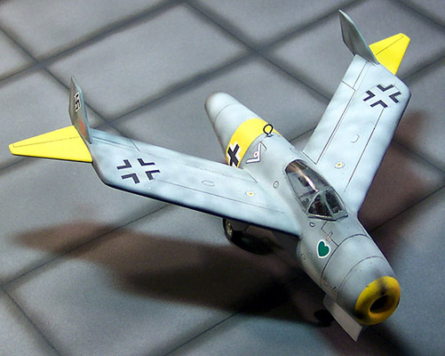
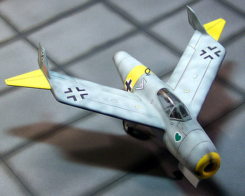

Luft �46 projects have always fascinated me. I try to imagine the surprise that members of the famous Watson�s Whizzers must have experienced when discovering such unusual aircraft as the HO-229 or this particular project � the Blohm and Voss BV-212. I think that it is much better that these guys experience the surprise rather than Allied bomber crews though.
 In July of 1944 the RLM found themselves with their back to the wall defensively and mandated all aircraft production to focus on defensive fighters such as the Me-262 and the Do-335. Other than continuing development of the Arado 234 jet bomber and development of the advanced Ju-287 and He-343, all energies were directed to the defensive aircraft. While the Me-262 maintained a significant speed advantage over the allied fighters it lacked high altitude capabilities needed to combat the B-29 Superfortress. At the end of 1944 the RLM launched the Emergency Fighter Competition with the sole intent of developing a fighter with performance superior to the Me-262. The power requirement of the new fighter would be the Heinkel HeS-011 turbojet engine.
In July of 1944 the RLM found themselves with their back to the wall defensively and mandated all aircraft production to focus on defensive fighters such as the Me-262 and the Do-335. Other than continuing development of the Arado 234 jet bomber and development of the advanced Ju-287 and He-343, all energies were directed to the defensive aircraft. While the Me-262 maintained a significant speed advantage over the allied fighters it lacked high altitude capabilities needed to combat the B-29 Superfortress. At the end of 1944 the RLM launched the Emergency Fighter Competition with the sole intent of developing a fighter with performance superior to the Me-262. The power requirement of the new fighter would be the Heinkel HeS-011 turbojet engine.
By February 1945, three proposals had been received from Messerschmitt, two from Focke-Wulf and one each from Heinkel, Junkers and Blohm & Voss. The Blohm and Voss proposal was actually the third generation of design. The first of the BV P.212 designs featured a short, squat fuselage, with a short air intake. The wings were swept back at 45 degrees, and featured a small amount of dihedral. Two small vertical fins were located near the wingtips. The second of the BV P.212 designs was a refinement of the previous BV P.212.01. The fuselage was lengthened and featured a pressurized cockpit, the wings now featured down-turned wingtips in place of the wingtip fins of the BV P.212.01. The BV P.212.03 was the final design. The fuselage was again lengthened, with larger internal fuel tanks being installed. The wings were swept back at 40 degrees and featured pronounced dihedral. There were full-span leading-edge slats and at the rear of each wingtip there were a small fin and rudder. In addition, the wings were designed to be built out of wood, steel or aluminum, although the first versions were to have the usual stressed skin steel construction.
2700 liters (713 gallons) of fuel could be carried, 2100 liters internally in the wings and fuselage and 300 liters in two under wing drop tanks giving four hours of flight time. The armament consisted of 2, 3, 5 or 7 MK 108 30mm cannons, with armament variants including 22 R4M rockets in the nose or a 500kg bomb load. Although the Focke-Wulf Ta 183 was chosen for production in late February, the design impressed the panel so much that three prototypes were ordered and construction began in May 1945. After exhaustive wind tunnel and structural tests, the first aircraft was to make its first flight in August and the second aircraft was to be ready by September 1945. Of course, the end of the war ended all construction.
The Kit
Fonderie Miniatures has been putting out a few new kits of interesting subjects. This particular kit gives the immediate impression of a limited run kit, the sprue gates are all heavy, and the plastic is rough and shows the dreaded orange peel effect in several places. This is a true multi-media kit with the main fuselage and wing pieces of injection molded plastic, the interior cockpit pieces of resin and the landing gear of white metal. The canopy is a Vac piece that is fairly clear and benefits from a coat of Future Floor Polish. While the plastic pieces all feature engraved panel lines they are not very crisp. The resin looks to be of good quality but the seat does not have any seat belts � I added Cutting Edge poseable seat belts to dress up the front office a little.
Like most limited run kits and other European projects, there are no locator pins on any of the parts and the wing pieces all have large flat contact surfaces. The challenge here will be to get the wing dihedral correct and maybe add some pins. The landing gear doors do offer some very nice interior panel details. This kit includes the basic pieces to build a descent replica of the aircraft but lacks the finer pieces such as aerial loop, seatbelts and some decals, which I�ll talk about in a moment. Overall we have 31 injection molded pieces, 15 white metal pieces, one resin piece and one Vac piece for a total of 48 pieces in the box.


 



{kind=link}
{kind=link}
{kind=link}